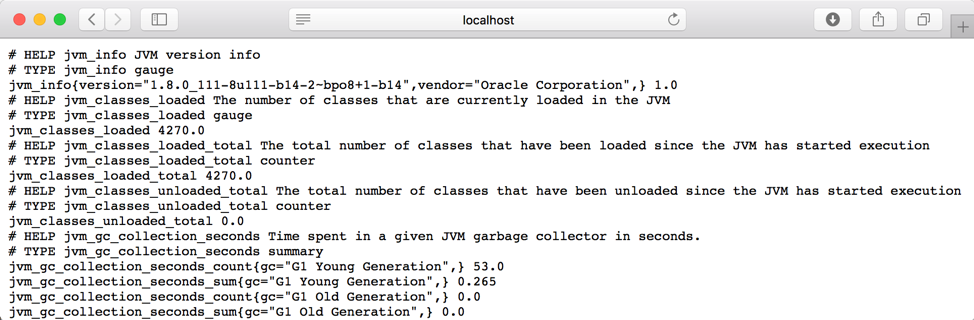
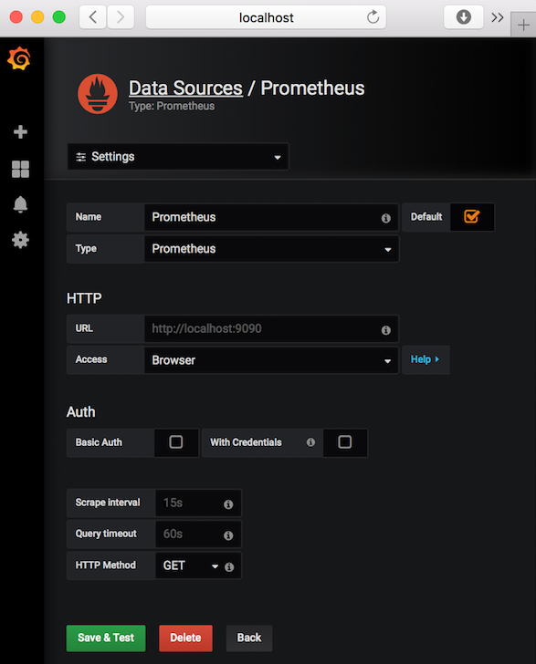
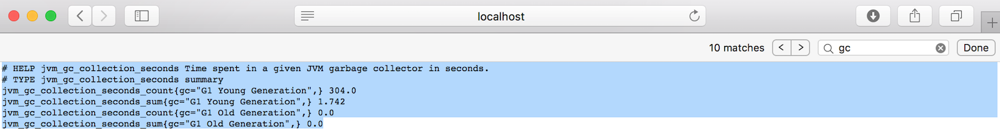

Monitoring Kafka with Prometheus and Grafana
Author: Ana Giordano - IBM
A comprehensive Kafka monitoring plan should collect metrics from the following components:
- Kafka Broker(s)
- Kafka Cluster (which should include ZooKeeper metrics as Kafka relies on it to maintain its state)
- Producer(s) / Consumer(s)
Kafka Broker, Zookeeper and Java clients (producer/consumer) expose metrics via JMX (Java Management Extensions) and can be configured to report stats back to Prometheus using the JMX exporter maintained by Prometheus. There is also a number of exporters maintained by the community to explore. Some of them can be used in addition to the JMX export. To monitor Kafka, for example, the JMX exporter is often used to provide broker level metrics, while community exporters claim to provide more accurate cluster level metrics (e.g. Kafka exporter, Kafka Zookeeper Exporter by CloudFlare, and others). Alternatively, you can consider writing your own custom exporter.
What to monitor
A long list of metrics is made available by Kafka (here) and Zookeeper (here). The easiest way to see the available metrics is to fire up jconsole and point it at a running kafka client or Kafka/Prometheus server; this will allow browsing all metrics with JMX. But you are still left to figure out which ones you want to actively monitor and the ones that you want to be actively alerted.
An simple way to get started would be to start with the Grafana’s sample dashboards for the Prometheus exporters you chose to use and then modify them as you learn more about the available metrics and/or your environment on ICP. The Monitoring Kafka metrics article by DataDog and How to monitor Kafka by Server Density provides guidance on key Kafka and Prometheus metrics, reasoning to why you should care about them and suggestions on thresholds to trigger alerts. In the next section, we will demonstrate exactly that; we will start with sample dashboards and make few modifications to exemplify how to configure key Kafka metrics to display in the dashboard.
Configuring server and agents
For convenience and easy configuration, we will use Docker images from DockerHub and make few modifications to DockerFiles to include few additional steps to install, configure and start the servers and exporter agents locally.
Kafka and Zookeeper servers with JMX Exporter
We will start with the DockerFile of the Spotify kafka image from DockerHub as it includes Zookeeper and Kafka in a single image. The DockerFile was modified as shown below to download, install the Prometheus JMX exporter. The exporter can be configured to scrape and expose mBeans of a JMX target. It runs as a Java Agent, exposing a HTTP server and serving metrics of the JVM. In the DockerFile below, Kafka is started with JMX exporter agent on port 7071 and metrics will be expose in the /metrics endpoint.
FROM java:openjdk-8-jre
ENV DEBIAN_FRONTEND noninteractive
ENV SCALA_VERSION 2.11
ENV KAFKA_VERSION 0.10.2.2
ENV KAFKA_HOME /opt/kafka_"$SCALA_VERSION"-"$KAFKA_VERSION"
# Install Kafka, Zookeeper and other needed things
RUN apt-get update && \
apt-get install -y zookeeper wget supervisor dnsutils vim && \
rm -rf /var/lib/apt/lists/* && \
apt-get clean && \
wget -q http://apache.mirrors.spacedump.net/kafka/"$KAFKA_VERSION"/kafka_"$SCALA_VERSION"-"$KAFKA_VERSION".tgz -O /tmp/kafka_"$SCALA_VERSION"-"$KAFKA_VERSION".tgz && \
tar xfz /tmp/kafka_"$SCALA_VERSION"-"$KAFKA_VERSION".tgz -C /opt && \
rm /tmp/kafka_"$SCALA_VERSION"-"$KAFKA_VERSION".tgz
ADD scripts/start-kafka.sh /usr/bin/start-kafka.sh
# ADD scripts/jmx_prometheus_javaagent-0.9.jar "$KAFKA_HOME"/jmx_prometheus_javaagent-0.9.jar
# ADD scripts/kafka-0-8-2.yml "$KAFKA_HOME"/kafka-0-8-2.yml
# Supervisor config
ADD supervisor/kafka.conf supervisor/zookeeper.conf /etc/supervisor/conf.d/
# 2181 is zookeeper, 9092 is kafka
EXPOSE 2181 9092
# **********
# start - modifications to run Prometheus JMX exporter and community Kafka exporter agents
ENV KAFKA_OPTS "-javaagent:$KAFKA_HOME/jmx_prometheus_javaagent-0.9.jar=7071:$KAFKA_HOME/kafka-0-8-2.yml"
RUN wget -q https://repo1.maven.org/maven2/io/prometheus/jmx/jmx_prometheus_javaagent/0.9/jmx_prometheus_javaagent-0.9.jar -O "$KAFKA_HOME"/jmx_prometheus_javaagent-0.9.jar && \
wget -q https://raw.githubusercontent.com/prometheus/jmx_exporter/master/example_configs/kafka-0-8-2.yml -O "$KAFKA_HOME"/kafka-0-8-2.yml
EXPOSE 7071
# end - modifications
# **********
CMD ["supervisord", "-n"]For your convenience, the modified DockerFile and scripts are available on this GitHub repository. You can run the following commands to create and run the container locally.
- download git repo with DockerFile and scripts
mkdir /tmp/monitor
git clone https://github.com/anagiordano/ibm-artifacts.git /tmp/monitor/.- Build image from DockerFile
docker build --tag kafka_i /tmp/monitor/kafka/.- Create/Run Docker container
docker run -d -p 2181:2181 -p 9092:9092 -p 7071:7071 --env ADVERTISED_PORT=9092 --name kafka_c kafka_i- Create kafka topics
docker exec -it kafka_c /bin/bash
cd /opt/kafka*/bin
export KAFKA_OPTS=""
./kafka-topics.sh --create --zookeeper localhost:2181 --replication-fact 1 --partitions 1 --topic my-topic1
./kafka-topics.sh --create --zookeeper localhost:2181 --replication-fact 1 --partitions 1 --topic my-topic2
./kafka-topics.sh --list --zookeeper localhost:2181- (optional) Produce few message into topics from console and exit container
./kafka-console-producer.sh --broker-list localhost:9092 --topic my-topic1
./kafka-console-producer.sh --broker-list localhost:9092 --topic my-topic2
exitLastly you can validate that the /metrics endpoint is returning metrics from Kafka. On a browser, open the http://localhost:7071/metrics URL.

Prometheus Server and scrape jobs
Prometheus uses a configuration file in YAML format to define the scraping jobs and their instances. You can also use the configuration file to define recording rules and alerting rules:
-
Recording rules allow you to precompute frequently needed or computationally expensive expressions and save their result as a new set of time series. Querying the precomputed result will then often be much faster than executing the original expression every time it is needed. This is especially useful for dashboards, which need to query the same expression repeatedly every time they refresh.
-
Alerting rules allow you to define alert conditions based on Prometheus expression language expressions and to send notifications about firing alerts to an external service. Alerting rules in Prometheus servers send alerts to an Alertmanager. The Alertmanager then manages those alerts, including silencing, inhibition, aggregation and sending out notifications via methods such as email, PagerDuty and others.
Below, we will go thru the steps to stand-up a local Prometheus server as a Docker container and to modify the configuration file to scrape Kafka metrics.
- Create/run a docker container using Prometheus official image from DockerHub
docker run -d -p 9090:9090 prom/prometheus- Obtain the IP address of the Kafka container
docker inspect kafka_c | grep IPAddress- Edit the prometheus.yml to add Kafka as a target
docker exec -it prometheus_c \sh
vi /etc/prometheus/prometheus.yml- Locate the scrape_configs section in the properties file and add the lines below to define the Kafka job, where the IP should be the IP of the kafka container
- job_name: 'kafka'
static_configs:
- targets: ['172.17.0.4:7071']- Reload the configuration file
ps -ef
kill -HUP <prometheus PID>- You can now verify that Kafka is listed as a target job in Prometheus. On a Browser, open the http://localhost:9090/targets URL.

Grafana Server and dashboards
We will use Grafana for visualization of the metrics scraped by Prometheus for that, we will need to:
- Stand-up a local Grafana server as a Docker container
- Configure Prometheus as a data source in Grafana
- Import sample dashboards provided by Grafana and/or community
- Modify the sample dashboards as we see fit
Let’s get started:
- Create a docker container using Prometheus official image from DockerHub
docker run -d --name=grafana_c -p 3000:3000 grafana/grafana-
On a Browser, open the http://localhost:3000 URL.
-
Login as admin/admin. You will be prompted to change the password.
-
Once logged in, Grafana provides visual guidance on what the next steps are: a) Add data sources b) Create first dashboard and others

-
Configure Prometheus as a data source:
-
Enter a Name for the data source (e.g. Prometheus)
- Select Prometheus as Type
- Enter http://localhost:9090 for HTTP URL
- In our simple server configuration, select Browser for HTTP Access
- Click Save and Test to validate configuration

-
Back to Home, click Dashboards -> Manage to import sample dashboards
-
Click the +Import button and paste this URL https://grafana.com/dashboards/721
- Make sure to select Prometheus as the data source.
NOTE: You can also explore other sample dashboard options at https://grafana.com/dashboards. For instance, there is a Kubernetes Kafka resource metrics sample dashboard that you could use instead as the starting point when configuring Kafka monitoring on ICP.

The six graphs displayed in the dashboard are configured as follows:
NOTE: You might want to go back to your Kafka Docker container and push messages into the topics you have created above to see changes to the graph. Or, if you have already pushed messages, you can change the Quick Range from last 5 minutes to something else (e.g. last 6 hours) on the top right hand corner of the dashboard.
| Graph | Formula | Format As |
|---|---|---|
| CPU Usage | rate(process_cpu_seconds_total{job="kafka"}[1m]) | Time Series |
| JVM Memory Used | sum without(area)(jvm_memory_bytes_used{job="kafka"}) | Time Series |
| Time spent in GC | sum without(gc)(rate(jvm_gc_collection_seconds_sum{job="kafka"}[5m])) | Time Series |
| Messages In per Topic | sum without(instance)(rate(kafka_server_brokertopicmetrics_messagesin_total{job="kafka",topic!=""}[5m])) | Time Series |
| Bytes In per Topic | sum without(instance)(rate(kafka_server_brokertopicmetrics_bytesin_total{job="kafka",topic!=""}[5m])) | Time Series |
| Bytes Out per Topic | sum without(instance)(rate(kafka_server_brokertopicmetrics_bytesout_total{job="kafka",topic!=""}[5m])) | Time Series |
Prometheus provides a functional expression language that lets the user select and aggregate time series data in real time. Before proceeding review the information on these pages to gain basic understanding of:
- Prometheus Expression language - http://docs.grafana.org/features/datasources/prometheus/
- Grafana Query Editor - http://docs.grafana.org/features/datasources/prometheus/
As you make modifications to the dashboard it is also important to understand the data returned by the scrape jobs in the first place. For two of the metrics above, this is what the Kafka JMX exportex returns. You can go to https://localhost:7071/metrics to inspect others returned in /metrics endpoint response:
- Messages in Per Topic

- Time spent in GC
